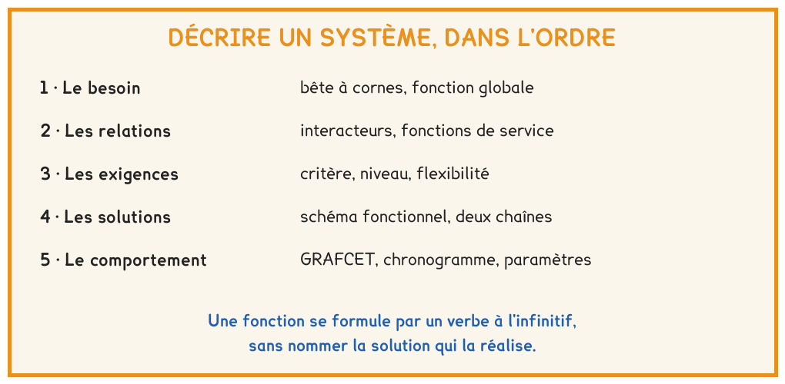
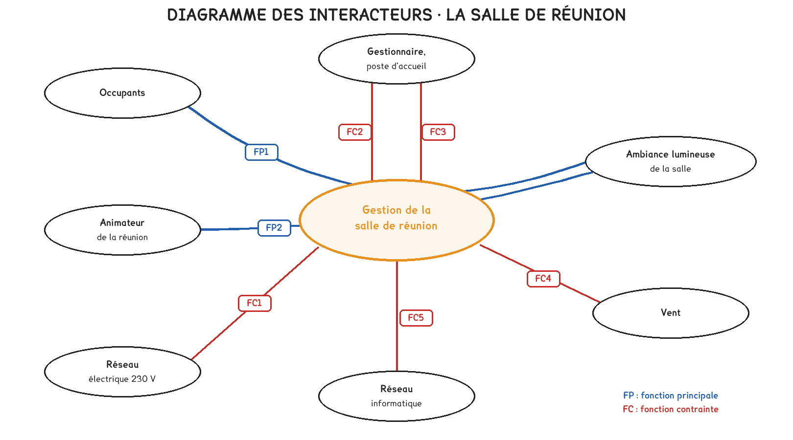
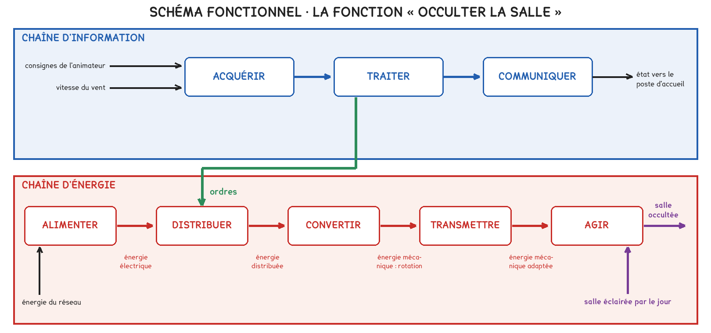
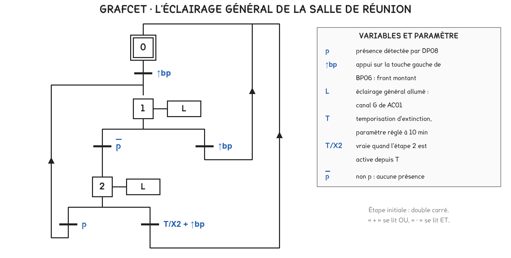

BTS FED option C · 1re année
Trois outils décrivent un système, et chacun répond à une question. Ce qu'il doit faire, avec la bête à cornes et les fonctions de service. Comment il le fait, avec les deux chaînes du schéma fonctionnel. Comment il se comporte dans le temps, avec le GRAFCET.
1 outil · 6 questions · 4 exercices · 3 replis · 5 figures
Savoirs travaillés
Avant de choisir un matériel, il faut savoir ce que le système doit faire ; avant de le mettre en service, il faut savoir comment il doit se comporter. La séance a décrit dans cet ordre la salle de réunion des Bureaux Les Oliviers, pour laquelle le gestionnaire demandait des volets motorisés.
Le référentiel range ces savoirs sous le nom d’outils de description, au niveau 3 pour l’option C.

La fonction globale répond à trois questions : à qui le système rend service, sur quoi il agit, dans quel but. Pour la salle : adapter l’ambiance lumineuse à son occupation et à son usage.

Une fonction principale relie deux éléments extérieurs par l’intermédiaire du système. Une fonction contrainte exprime l’adaptation du système à un seul élément : le réseau 230 V, le vent, le réseau informatique.
Une fonction se formule par un verbe à l’infinitif suivi de son complément, sans nommer la solution. « Éteindre l’éclairage de la salle inoccupée » est une fonction ; « posséder un détecteur de présence » décrit une solution.
Pour aller plus loin
Chaque fonction se rend vérifiable par trois données. Le critère est la grandeur mesurée, le niveau la valeur attendue avec son unité, la flexibilité la marge admise, notée de F0, impérative, à F3, très négociable.
Pour la remontée des volets : critère, la vitesse du vent ; niveau, 40 km/h ; flexibilité F0, car il s’agit de sécurité. L’ensemble de ces lignes constitue le cahier des charges fonctionnel.
Les familles de la semaine 1 trouvent leur place dans le schéma fonctionnel. Le capteur et l’organe de commande acquièrent, le pré-actionneur distribue, l’actionneur convertit, le réducteur transmet.

L’alimentation du bus n’appartient pas à la chaîne d’énergie : elle n’alimente aucun actionneur. Elle assure la fonction alimenter de la chaîne d’information, en 30 V continu, TBTS.
Pour aller plus loin
Aucun appareil ne s’appelle « centrale ». Chaque participant contient un programme d’application, paramétré à la mise en service, qui décide de son action à la réception d’un télégramme. La fonction traiter est donc répartie.
La conséquence est pratique : la panne d’un participant ne supprime que sa propre fonction. Seules la ligne et son alimentation restent communes à tous.

Une étape est une situation stable, à laquelle sont associées des actions. Une transition porte une réceptivité, condition logique qui fait passer d’une étape à la suivante.
T/X2 + ↑bp
La durée T est un paramètre : elle se règle sans redessiner le graphe.
Pour aller plus loin
À l’étape 0, la seule réceptivité est l’appui sur le poussoir. Le graphe traduit un fonctionnement en allumage manuel et extinction automatique : la lumière ne s’allume que si un occupant le juge nécessaire.
Si la présence suffisait à rallumer, un occupant ne pourrait plus éteindre la salle pendant une projection : la présence, toujours détectée, rallumerait aussitôt.
Exercice · B8-1
La temporisation d’extinction vaut 15 min. La salle se vide à la minute 38 et personne ne revient.
À quelle minute l’éclairage s’éteint-il ?
Exercice · B8-2
L’éclairage général d’une salle absorbe 420 W. La fonction FC2 évite chaque jour ouvré 2 h 30 d’éclairage inutile, sur 220 jours par an.
Quelle énergie est économisée par an ?
Exercice · B8-1
Dans la chaîne d’énergie d’un volet roulant, le réducteur intégré au moteur tubulaire adapte la vitesse et le couple avant l’axe d’enroulement.
Quelle fonction de la chaîne d’énergie assure-t-il ?
Exercice · B8-1
Un camarade propose, pour une fonction de service : « Le système possède une station météo sur le toit. » Lui expliquer en trois ou quatre lignes pourquoi ce n’est pas une fonction de service, puis proposer une reformulation.
La séance d’atelier de la même semaine applique ces outils à une platine réelle : tracer ses deux chaînes, décrire chaque fonction en une phrase, prévoir son comportement avant l’essai. La semaine suivante ouvre le bloc communication par les médias : bus, radio, CPL et fibre.
Cette page rappelle la séance. Elle ne remplace pas le polycopié et ne donne aucun corrigé. Rien de ce que vous saisissez n'est enregistré.